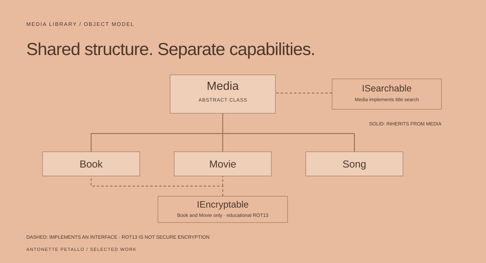

03 / SOFTWARE FUNDAMENTALS
ANTONETTE PETALLOMedia Library.
A C# coursework application exploring abstract classes, interfaces, file input and searchable media collections.
- Context & contribution
- Coursework · C# implementation
- Tools & methods
- C#, .NET Framework, text-file input
- Current status
- Educational console project · source available

One collection, different kinds of object.
Books, movies and songs share a title and year, but each has its own fields. The exercise is to give those differences a clear structure while keeping listing and searching understandable.
The console application loads records from a text file, groups them by type, and searches across titles. It is a contained coursework example rather than a deployed product.
Put shared behaviour in the right place.
An abstract Media class holds shared properties and implements ISearchable with a case-insensitive title search. Book, Movie and Song provide their own details.
Book and Movie also implement IEncryptable. Keeping that contract separate demonstrates that a capability can apply to some types without forcing it onto every media object.
- File.ReadAllLines reads the source records.
- The parser creates typed objects from the text records.
- A menu supports type-specific listings, a full listing and title search.
- Invalid menu input receives a clear prompt rather than being assumed valid.
Name the security limitation precisely.
The IEncryptable implementation uses ROT13 to transform summaries. ROT13 is a reversible educational substitution, not secure encryption. This project does not demonstrate secure storage of sensitive information.
The repository also includes compiled and generated files. A cleaner next iteration would ignore build output, add parser tests and handle malformed records deliberately.
Small enough to explain completely.
The value of this project is the relationship between its parts: inheritance for shared structure, an interface for a common operation, and another interface for an optional capability.
What this demonstrates: reading and reasoning about object-oriented code, choosing contracts, and recognising the difference between a learning technique and a production security control.
Evidence reviewed · October 28, 2026
Public source; no
production outcome claimed.